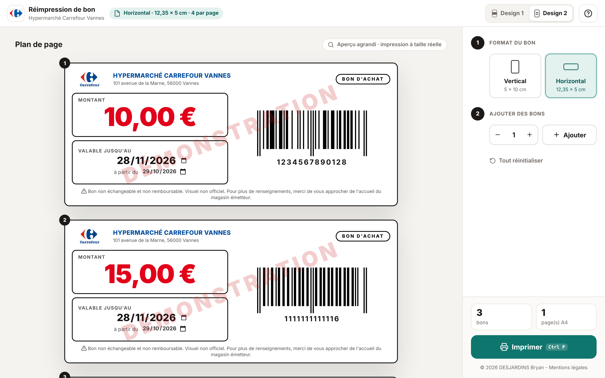
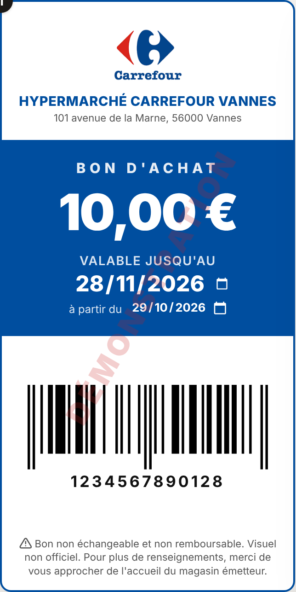
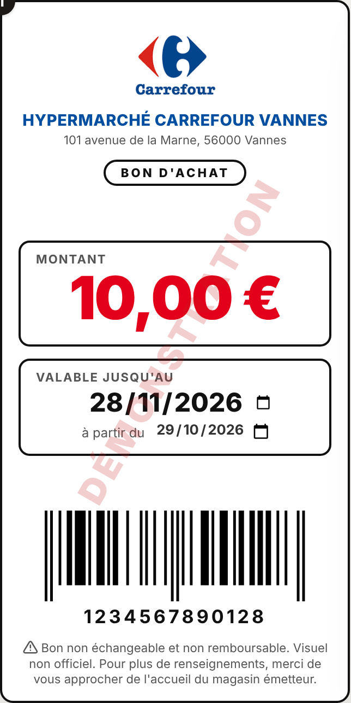
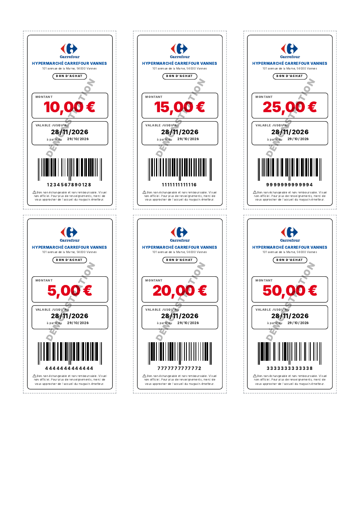
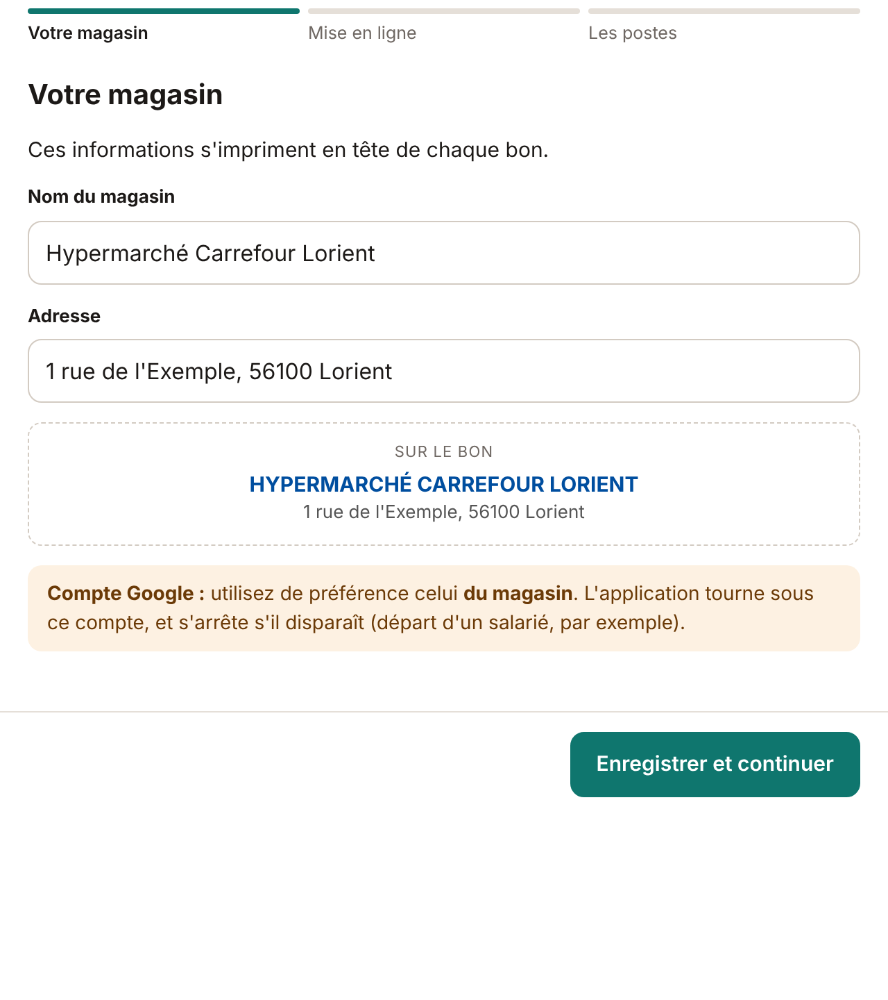

Outil interne · accueil
Réimpression de bons d'achat
Refaire un bon d'achat à l'identique, en quelques secondes, au bon format.
Hypermarché Carrefour Vannes
Présentation à la direction · Bryan Desjardins

Le besoin
À l'accueil, un bon d'achat doit parfois être refait
1Rapide
Montant, dates de validité, code EAN : on saisit directement sur le bon, le code-barres se dessine tout seul.
2Sans erreur
Un bon incomplet est signalé en orange. La clé du code EAN est contrôlée avant l'impression.
3Propre
Impression A4 à taille réelle, avec repères de découpe : 4 ou 6 bons par page.
Une première version tourne déjà à Vannes. La nouvelle version la rend plus claire, plus sûre, et installable dans d'autres magasins.
Réimpression de bons d'achat2
En un écran
Tout se fait sur une seule page
- 1Choisir le format et le design du bon
- 2Saisir montant, dates et EAN directement sur le bon
- 3Ajouter des bons par lot, dupliquer, supprimer
- 4Contrôler le compteur, puis Imprimer
Deux designs
Un bon lisible, quelle que soit l'imprimante

Design 1
Bloc bleu Carrefour : le plus valorisant. Pour une imprimante couleur.

Design 2
Cases bordées, sans aplat : net en noir et blanc, peu d'encre.
Chaque poste retient son design. Deux formats : vertical 5 × 10 cm ou horizontal 12,35 × 5 cm.
Réimpression de bons d'achat4
Ce que l'outil garantit
Simple, et sans données à protéger
- ✓Aucune donnée client n'est saisie ni conservée.
- ✓Rien n'est stocké : les bons en cours disparaissent à la fermeture.
- ✓Chaque bon porte la mention « non échangeable, non remboursable, visuel non officiel ».
- ✓Les postes ouvrent un simple lien, sans compte ni installation.
- ✓Gratuit : l'outil tourne sur le compte Google du magasin.

Réimpression de bons d'achat5
Et dans d'autres magasins ?
Une installation autonome, en dix minutes
- 1Le magasin copie le modèle en un clic, sur son propre compte Google.
- 2Un assistant demande le nom et l'adresse du magasin, puis guide la mise en ligne.
- 3Le lien obtenu s'ouvre sur chaque poste de l'accueil.
Chaque magasin est indépendant : ses réglages, son compte, ses limites d'utilisation Google.

Réimpression de bons d'achat6
Le cadre
Ce qui est à valider
Propriété et licence
L'outil reste la propriété de son auteur. Le magasin reçoit une licence d'utilisation, révocable. Toute installation dans un autre magasin se fait avec l'accord écrit de l'auteur.
Usage de la marque
Les bons portent le logo et le nom du magasin, avec la mention « visuel non officiel ». Leur usage est à valider par la direction, et au-delà si l'outil doit s'étendre.
Le code-barres reprend le code EAN du bon d'origine : la caisse le lit comme d'habitude (vérifié à Vannes).
Réimpression de bons d'achat7
Ce que je vous propose
Trois étapes
- 1Valider l'usage à l'accueil de Vannes avec la nouvelle version.
- 2Essayer les deux designs quelques jours, puis en garder un, selon l'imprimante.
- 3Si l'essai est concluant, présenter l'outil au niveau supérieur, avec le retour d'expérience de Vannes.
Merci. Place à la démonstration.
Réimpression de bons d'achat8